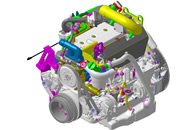
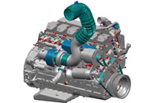

Motores leves
Até 3.0 litros. Eletrônicos, oferecem excelente performance nas mais diferentes faixas de potência, com elevado torque e baixo custo de manutenção.
Modelo Combo Alfa

Cabeçotes individuais com 4 válvulas por cilindro
Uso: veicular
Modelo Delta.

Cabeçotes individuais com 6 válvulas por cilindro
Uso: veicular, marítimo
Modelo Ragon TY
Cabeçotes individuais com 3 válvulas por cilindro
Uso: veicular
Motores Médios
Até 6.0 litros. Performance, confiabilidade e durabilidade, com eficiência no consumo de combustível e baixo custo de manutenção.
Modelo Dyna
Cabeçotes individuais com 4 válvulas por cilindro
Uso: agrícola
Modelo Tork
Cabeçotes individuais com 4 válvulas por cilindro
Uso: agrícola, industrial
Modelo Tork JA
Cabeçotes individuais com 4 válvulas por cilindro
Uso: industrial
Motores Grandes
Até 9.0 litros. Performance, confiabilidade e durabilidade, com eficiência no consumo de combustível e baixo custo de manutenção.